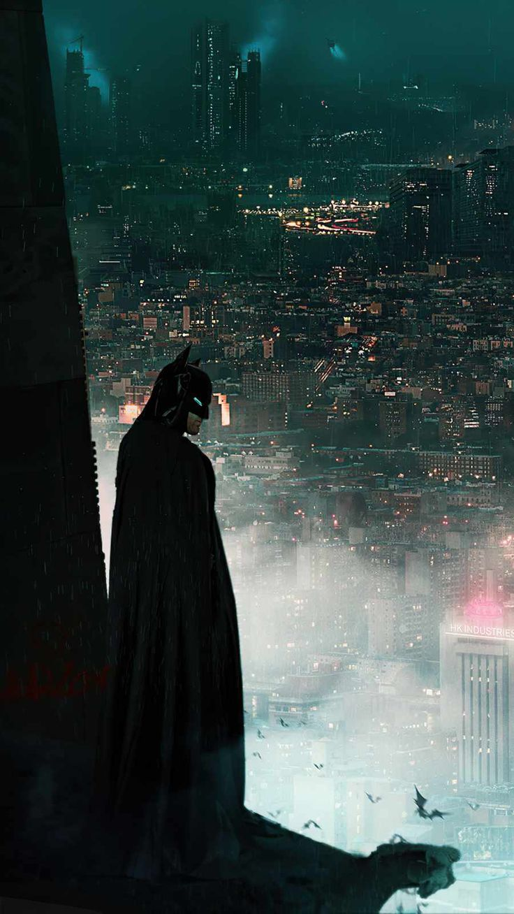
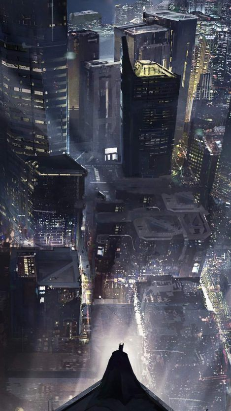
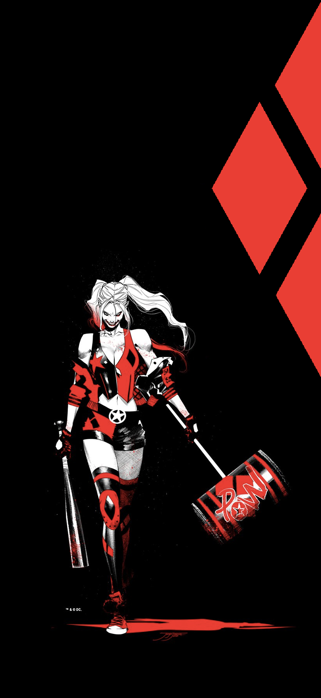
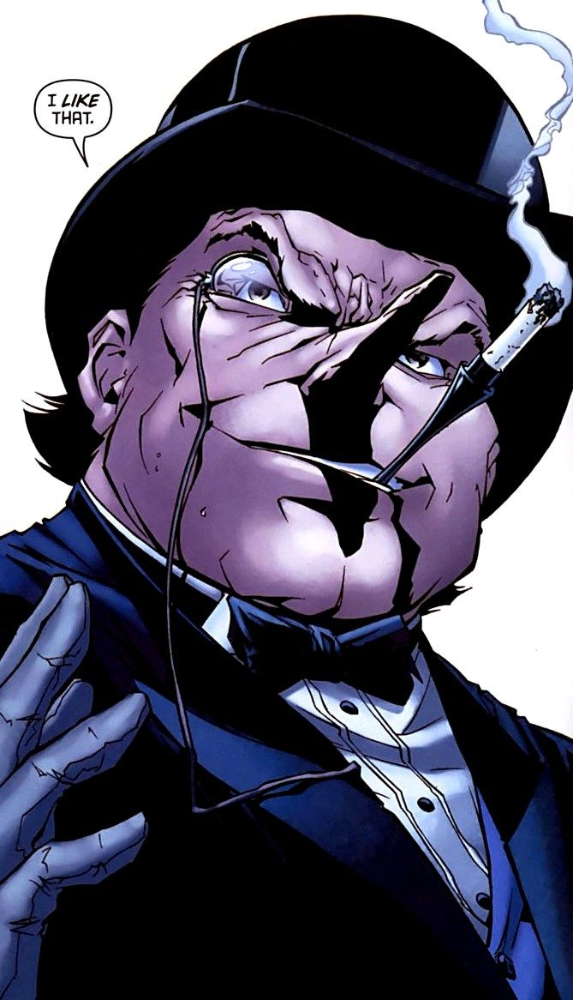
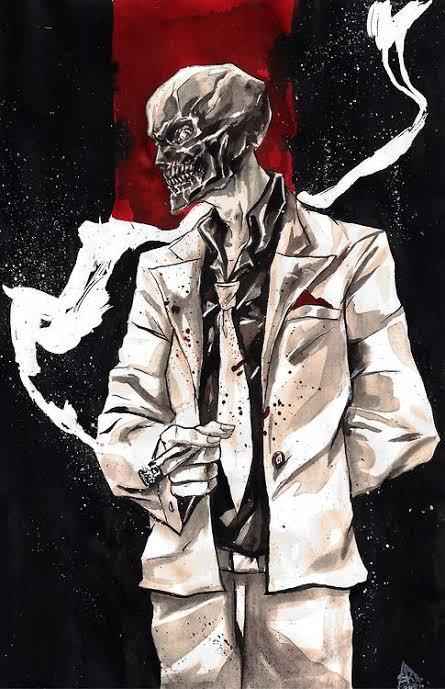
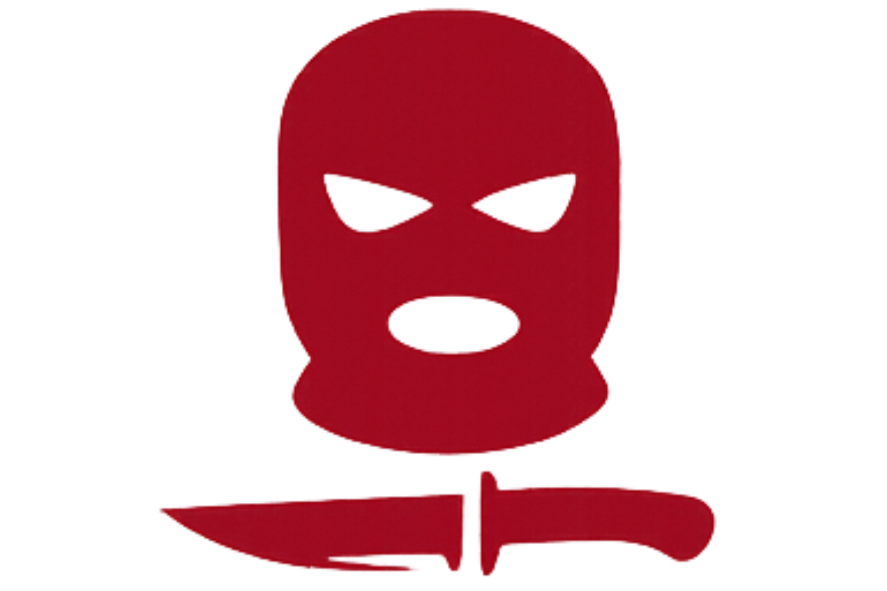
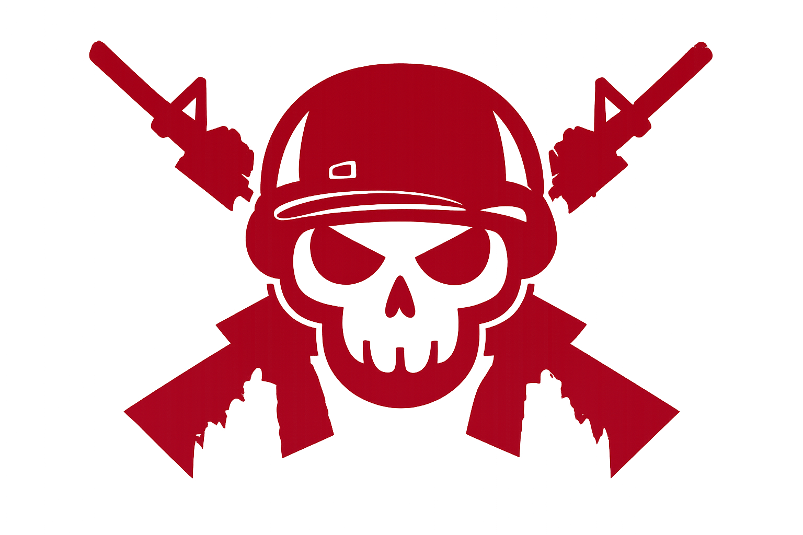
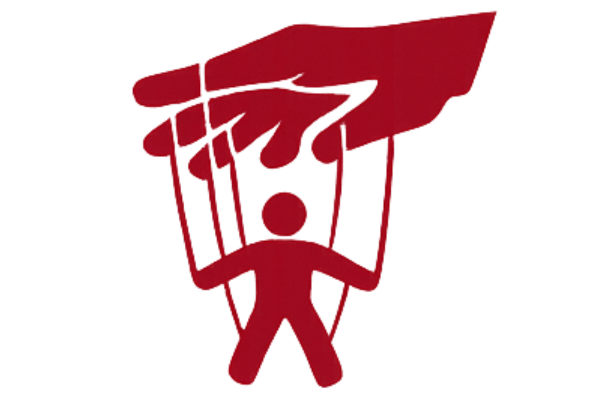

Gotham City está afundando. As ruas estão tomadas pela violência, corrupção e paranoia. As grandes famílias mafiosas controlam bairros inteiros, gangues dominam territórios abandonados, policiais vendem informações, mercenários trabalham para quem pagar mais e cada esquina da cidade parece esconder um segredo diferente. Em meio a esse caos nasce Gotham: The Long Night, um RPG focado em máfia, conspiração criminal, suspense urbano e guerra entre facções dentro de Gotham City. A campanha se passa durante uma única e interminável noite em Gotham.

O sistema de Gotham: The Long Night foi criado para ser rápido, brutal e cinematográfico.
Os personagens utilizam:
• Atributos, que definem sua quantidade de dados
• Treinamentos, que representam sua experiência e habilidade
O combate é letal. Tiros importam. Ferimentos importam.
Informação vale tanto quanto uma arma carregada.
O sistema também possui:
• Estabilidade e Ferimentos
• Recursos como Dinheiro, Influência e Estrelismo
• Sistemas de Facção
• Vantagens sociais
• Gerenciamento de contatos, reputação e sobrevivência
O objetivo é fazer com que Gotham pareça viva, perigosa e imprevisível.

Antes de criar seu personagem, você escolhe um Arquétipo.
Arquétipos funcionam como bases prontas para acelerar sua criação e definir o tipo de personagem que você deseja interpretar dentro de Gotham.
Eles oferecem:
• sugestões de atributos
• treinamentos recomendados
• estilo de jogo
• vantagens narrativas
Mas eles NÃO limitam sua criatividade.
Você pode modificar partes do Arquétipo escolhido, adaptar habilidades, alterar treinamentos e personalizar seu personagem para que ele tenha sua própria identidade dentro da cidade.
Em Gotham, ninguém é completamente inocente.

A cidade é dividida entre grandes organizações criminosas, grupos armados e instituições corruptas.
Cada facção possui:
• benefícios exclusivos
• vantagens sociais
• recursos especiais
Escolher uma facção é escolher um lado nessa guerra urbana, mas também é escolher um estilo de jogo e uma rede de contatos dentro da cidade.
As facções de Gotham: The Long Night são inspiradas em organizações dos quadrinhos, filmes e séries de Gotham, mas também possuem elementos originais para criar uma experiência única dentro do universo da cidade.

As principais facções incluem:
Gangue do Máscara Negra
Especialistas em intimidação, mercado negro e domínio territorial.
Família Falcone
Influentes, políticos e extremamente organizados.
Mercenários
Altamente eficientes em combate, sobrevivência e operações táticas, mas raramente possuem aliados verdadeiros.
DPGC
A polícia de Gotham. Uma instituição quebrada entre investigadores honestos, corrupção interna e pressão constante das facções criminosas.
Seu arquétipo define suas vantagens, especializações e forma de atuação em Gotham.

Especialistas em crime urbano, invasões e sobrevivência nas ruas.
InformaçõesInvestigadores focados em análise, percepção e conspirações.
Informações
Combatentes preparados para guerras, escoltas e operações táticas.
Informações
Mestres da política, influência e chantagem social.
Informações